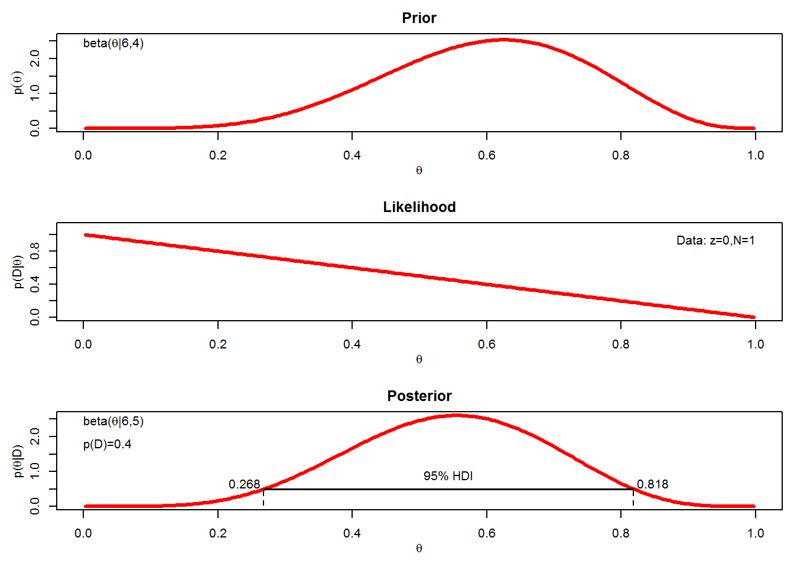
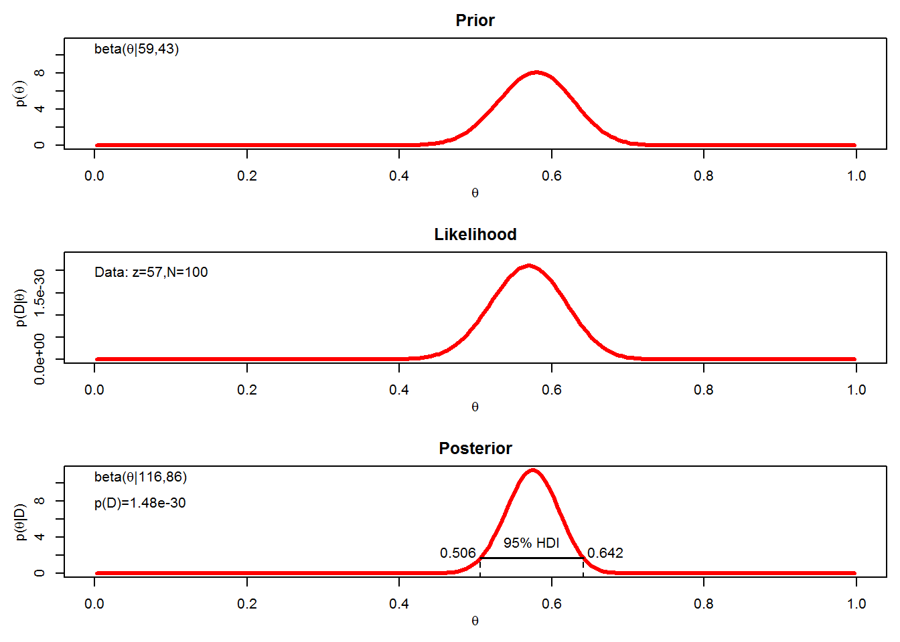
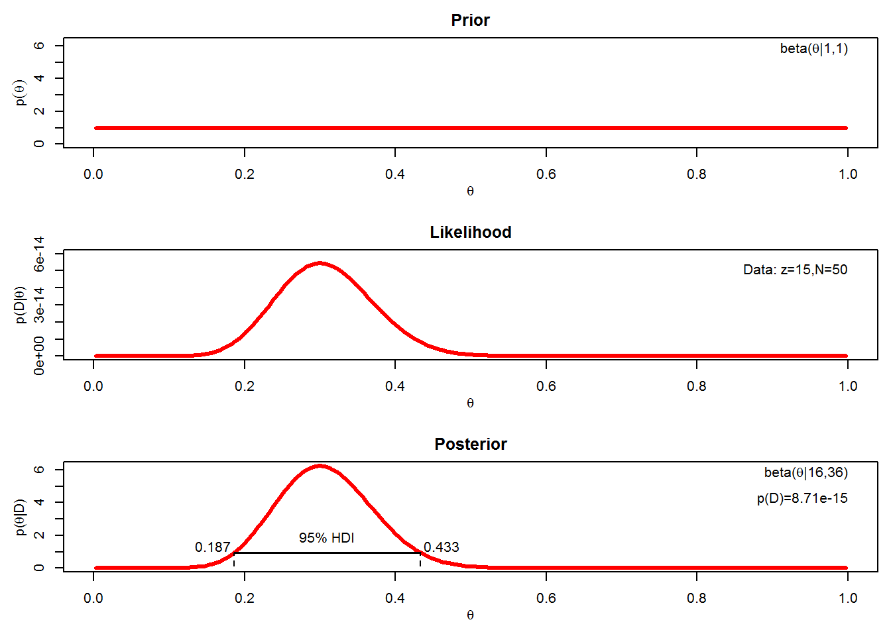
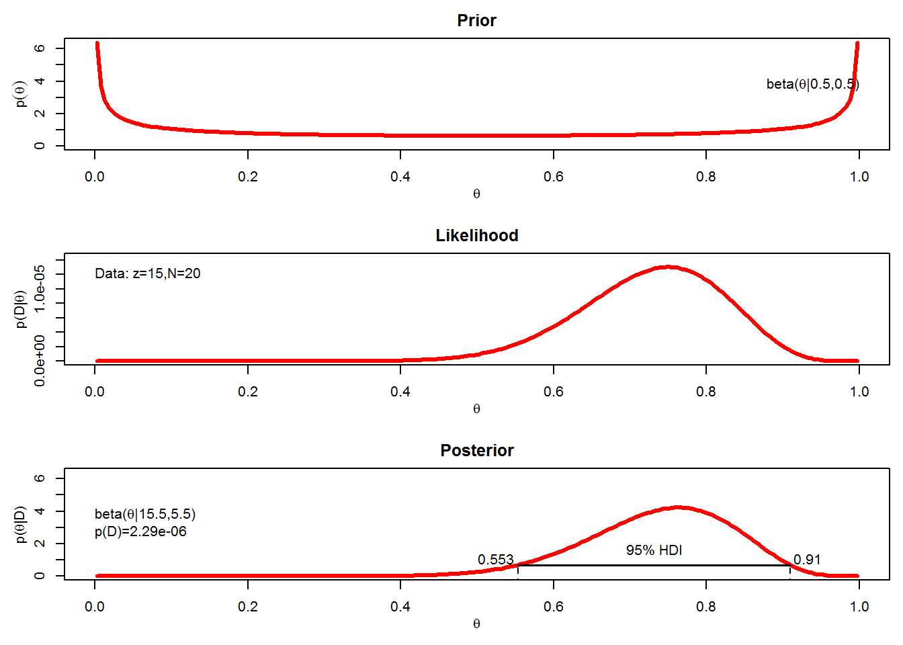
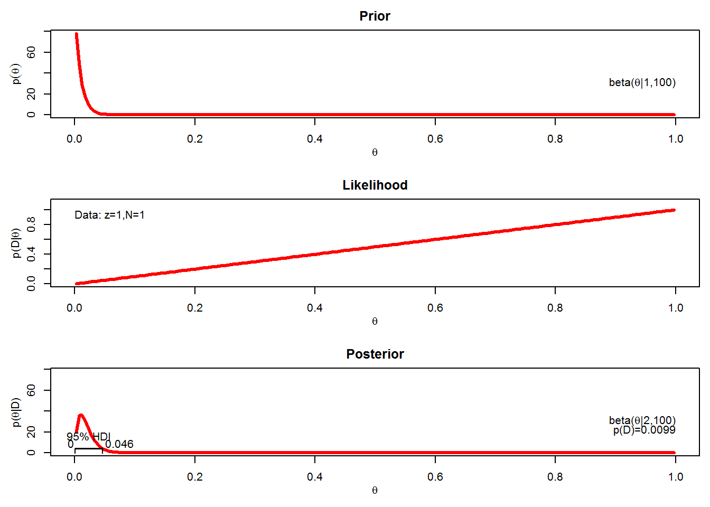
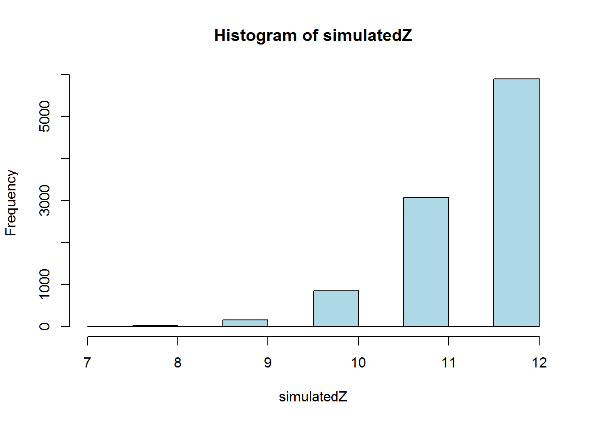

Doing Bayesian Data Analysis
Working through the book Doing Bayesian Data Analysis (ed.1) by John Kruschke, inc. examples and exercises.
Chapter 5: Exercises
Inferring a Binomial Proportion via Exact Mathematical Analysis
5.1
For this exercise, use the R function of Section 5.5.1 BernBeta.R. Notice that the function returns the posterior beta values each time it is called, so you can use the returned values as the prior values for the next function call. (I have adapted the BernBeta function slightly, and the function is included at the bottom.)
Start with a prior distribution that expresses some uncertainty that a coin is fair: \(beta(\theta | 4, 4)\). Flip the coin once; suppose we get a head. What is the posterior distribution?
posterior5.1a <- BernBeta(c(4,4), 1)Use the posterior from the previous flip as the prior for the next flip. Suppose we flip again and get a head. Now what is the new posterior?
posterior5.1b <- BernBeta(posterior5.1a, 1)
Using the posterior from the second flip, flip a third time and get a tails. Now what is the new posterior?
posterior5.1c <- BernBeta(posterior5.1b, 0)
Do the same three updates, but in the order T, H, H instead of H, H, T. Is the final posterior distribution the same for bother orderings of flips?
posterior5.1d <- BernBeta(c(4, 4), 0, plot = FALSE)
posterior5.1e <- BernBeta(posterior5.1d, 1, plot = FALSE)
posterior5.1f <- BernBeta(posterior5.1e, 1)5.2
Suppose an election is approaching, and you are interested in knowing whether the general population prefers candidate A or candidate B. A recently published poll in the newspaper states that of 100 randomly sampled people, 58 preferred candidate A and the remainder preferred candidate B.
Suppose that before the newspaper poll, your prior belief was a uniform distribution. What is the 95% HDI on your beliefs after learning of the newspaper poll results?
posterior5.2 <- BernBeta(c(1, 1), c(rep(1, 58), rep(0, 42)))95% HDI (highest density interval) goes from 0.483 to 0.673
Based on the newspaper poll, is it credible to believe that the population is equally divided in its candidate preference?
The HDI contains \(\theta = 0.5\), so it is credible to believe that the population is divided.
You want to conduct a follow up poll to narrow down your estimate of the population’s preference. In the poll you sample 100 people and find that 57 prefer candidate A and the remainder prefer candidate B. Assuming that peoples opinions have not changed between polls, what is the 95% HDI on the posterior? And based on the second poll is the population divided in its preference for each candidates?
posterior5.2c <- BernBeta(posterior5.2, c(rep(1, 57), rep(0, 43)))
The 95% HDI goes from 0.506 to 0.642, which does not include \(\theta = 0.5\), so we could conclude that the population is not equally divided, and does prefer candidate A.
5.3
Suppose you train people in a simple learning experiment, as follows. When people see the two words “radio” and “ocean”, on the computer screen, they should press the F key on the keyboard. They see several repetitions and learn the response well. The you introduce another correspondence for them to learn: Whenever the words “radio” and “mountain” appear, they should press the J key. You keep training them until they know both correspondence well.
Now you probe what they’ve learned by asking them about two novel test items. For the first test you show them the word “radio” by itself and instruct them to make the best response (F or J) based on what they learned before. For the second test, you show them two words “ocean” and “mountain” and ask them to make the best response. You do this procedure with 50 people. Your data show that for “radio” by itself, 40 people chose F and 10 chose J. For the word combination “ocean” and “mountain”, 15 chose F and 35 chose J.
Are people biased toward F or toward J for either of the two probe types? To answer this question, assume a uniform prior, and use a 95% HDI to decide which biases can be declared credible.
posterior5.3a <- BernBeta(c(1, 1), c(rep(1, 40), rep(0, 10)))posterior5.3b <- BernBeta(c(1, 1), c(rep(1, 15), rep(0, 35)))
In both cases the 95% HDI excludes \(\theta = 0.5\) so we can decide that people are biased in their responses, however they are biased toward F in the first case and toward J in the second case.
5.4
Suppose we have a coin that we know comes from a magic store, and therefore we believe that the coin is strongly biased either usually to come up heads or usually to come up tails, but we don’t know which. Express this belief as a beta prior.
Now we flip the coin five times and it comes up heads in four of the five flips. What is the posterior distribution?
posterior5.4 <- BernBeta(c(0.5, 0.5), c(1,1,1,1,0))5.5
Suppose you have a coin that you know is minted by the federal government and has not been tampered with. Therefore, you have strong prior belief that the coin is fair. You flip the coin 10 times and get 9 heads…
What is your predicted probability of heads for the 11th flip?
Our strength of belief in the fairness of the coin can be assumed to have a prior of \(beta(\theta|500, 500)\), if we suppose the coin had been flipped a 1000 times with 50% heads.
The posterior is \(beta(\theta | (500 + 9), (500 + 1))\), which has a mean of \(509 / (509 + 501) = 0.5039604\), this is the predicted probability of heads for the 11th flip.
Now you have a different coin, made of a strange material and marked “Patent Pending, International Magic Inc”. You flip the coin 10 times and get 9 heads. What is your predicted probability of heads for the 11th flip?
Using a prior of \(beta(\theta | 0.5, 0.5)\), because it expresses a belief that the coin is biased. The posterior is \(beta(\theta | (0.5 + 9), (0.5 + 1))\), which has a mean of \(9.5 / (9.5 + 1.5) = 0.8636364\). This is the predicted probability of heads for the 11th flip.
5.6
Suppose we have a coin, but we’re not sure whether it’s a fair coin or a trick coin. We flip it 20 times and get 15 heads. Is it more likely to be fair or trick?
posterior5.6fair <- BernBeta(c(50, 50), c(rep(1, 15), rep(0, 5)))posterior5.6biased <- BernBeta(c(0.5, 0.5), c(rep(1, 15), rep(0, 5)))
5.7
Suppose we have a coin that we strongly believe is a trick coin, so it almost always comes up heads or it almost always comes up tails; we just don’t know which way (heads or tails) the coin is biased.
One model is a beta prior heavily biased towards tails \(beta(\theta | 1, 100)\), and the other model is a beta prior heavily biased towards heads \(beta(\theta | 100, 1)\). We flip the coin once and it comes up heads.
Based on that single flip, what is the value of the Bayes Factor?
heads <- BernBeta(c(100, 1), 1)tails <- BernBeta(c(1, 100), 1)
The model with a beta prior heavily biased towards heads is favoured by a Bayes Factor of 0.99 / 0.0099 = 100
5.8
Following the scenario of the previous exercise, suppose we flip the coin a total of \(N = 12\) times and it comes up heads in \(z = 8\) of those flips. Suppose we let a \(beta(\theta | 100, 1)\) distribution describe the head-biased trick coin, and we let a \(beta(\theta | 1, 100)\) distribution describe the tail-biased trick coin.
What are the evidences for the two models, and what is the value of the Bayes Factor?
heads <- beta(100 + 8, 12 - 8 + 1) / beta(100, 1)
tails <- beta(1 + 8, 12 - 8 + 100) / beta(1, 100)The the heads-biased coin with prior \(beta(\theta | 100, 1)\), \(p(D) = 1.4908272\times 10^{-7}\), and for the tails-biased coin with prior \(beta(\theta | 1, 100)\), \(p(D) = 2.0222009\times 10^{-12}\). The Bayes Factor is therefore \(1.4908272\times 10^{-7} / 2.0222009\times 10^{-12} = 7.3723\times 10^{4}\), the head-biased prior is heavily favoured!
Now for the new part, a posterior predictive check. Is the winning model actually a good model of the data? In other words, one model can be whoppingly better than the other, but that does not necessarily mean that the winning model is a good model; it might mean merely that the winning model is less bad than the losing model. One way to examine the veracity of the winning model is to simulate data sampled from the winning model and see if the simulated data “look like” the actual data. To simulate data generated by the winning model, we do the following:
First, we will randomly generate a value from the posterior distribution of the winning omdel. Second, using that value, we will generate a sample of coin flips. Third, we will count the number of heads in the sample, as a summary of the sample. Finally, we determine whether the number of heads in a typical simulated sample is close to the number of heads in our actual sample. The follow program carries out these steps:
# priors
priorA <- 100
priorB <- 1
actualDataZ <- 8
actualDataN <- 12
# compute posterior parameter values
postA <- priorA + actualDataZ
postB <- priorB + actualDataN - actualDataZ
# number of flips in a simulated sample should match the actual sample
simSampleSize <- actualDataN
# number of simulated samples
Nsamples <- 10000
# create empty vector to store simulated results
simulatedZ <- vector(length = Nsamples)
# now generate posterior samples
for(index in 1:Nsamples){
# generate theta value from posterior
sampleTheta <- rbeta(1, postA, postB)
# generate sample using sampleTheta
sampleData <- sample(x = c(0, 1), prob = c(1-sampleTheta, sampleTheta),
size = simSampleSize, replace = TRUE)
# store number of heads in empty vector
simulatedZ[index] <- sum(sampleData)
}
# make a histogram of the number of heads in the sample
hist(simulatedZ, col = "lightblue")
How many samples (each of size N) were simulated?
This is the Nsamples variable above, so \(10^{4}\) were used.
Was the same value used for every simulated sample, or were different values used in different sample?
Values of theta were randomly sampled using the posterior, the line sampleTheta = rbeta(1, postA, postB) calculates a theta per simulation, so one theta value may be 0.9318076, another may be 0.935772.
Based on the simulation results, does the winning model seem to be a good model?
The histogram shown above almost never generates \(z = 8\), the head biased model is extremely head biased, but the result, 8 heads, is only moderately head biased. Therefore, despite the model be far better than the tail biased moodel, the head-biased model is probably a poor model of the actual data.
BernBeta function (used to generate plots on the page)
# Bayesian updating for Bernoulli likelihood and beta prior.
# args:
# priorShape : vector of parameter values for the prior beta distribution
# dataVec : vector of 1's and 0's
# credMass : the probability mass of the HDI
# plot : plot prior, likelihood and posterior
# output:
# postShape : vector of parameter values for the posterior beta distribution
BernBeta <- function(priorShape, dataVec, credMass = 0.95, plot = TRUE) {
# check inputs
if(length(priorShape) != 2) stop("priorShape must have two, numeric, components.")
if(any(priorShape <= 0)) stop("priorShape components must be positive.")
if(any(dataVec != 1 & dataVec !=0)) stop("dataVec must be a vector of 1's and 0's.")
if(credMass <= 0 | credMass >= 1) stop("credMass must be between 0 and 1.")
# rename prior shape parameters
a <- priorShape[1]
b <- priorShape[2]
# summarise new data
z <- sum(dataVec)
N <- length(dataVec)
# compute posterior shape parameters
postShape <- c(a + z, b + N - z)
# compute the evidence, p(D)
pData <- beta(z + a, N - z + b) / beta(a, b)
# determine limits of Highest Density Interval
hpdLim <- HDIofICDF(ICDFname = qbeta, shape1 = postShape[1], shape2 = postShape[2],
credMass = credMass)
if(plot) {
# plot everything
binwidth <- 0.005
Theta <- seq(from = binwidth / 2, to = 1 - (binwidth / 2), by = binwidth)
pTheta <- dbeta(Theta, a, b)
pDataGivenTheta <- Theta^2 * (1 - Theta)^(N-z)
pThetaGivenData <- dbeta(Theta, a + z, b + N - z)
layout(matrix(c(1,2,3), nrow = 3, ncol = 1, byrow = TRUE))
par(mar = c(3,3,1,0), mgp = c(2,1,0), mai = c(0.5, 0.5, 0.3, 0.1))
maxY <- max(c(pTheta, pThetaGivenData))
# plot prior
plot(Theta, pTheta, type = "l", lwd = 3, xlim = c(0, 1), ylim = c(0, maxY),
xlab = bquote(theta), ylab = bquote(p(theta)), main = "Prior",
col = "#FF0000")
if(a > b) {
textx <- 0
textadj <- c(0,1)
} else {
textx <- 1
textadj <- c(1, 1)
}
text(textx, 1.0*max(pThetaGivenData), bquote("beta(" * theta * "|" * .(a) * "," * .(b) * ")"), adj = textadj)
# plot likelihood
plot(Theta, pDataGivenTheta, type = "l", lwd = 3,
xlim = c(0, 1), ylim = c(0, 1.1*max(pDataGivenTheta)),
xlab = bquote(theta), ylab = bquote("p(D|" * theta * ")"),
main = "Likelihood", col = "#FF0000")
if(z > 0.5*N) {
textx <- 0
textadj <- c(0,1)
} else {
textx <- 1
textadj <- c(1, 1)
}
text(textx, 1.0*max(pDataGivenTheta), bquote("Data: z=" * .(z) * ",N=" * .(N)), adj = textadj)
# plot posterior
plot(Theta, pThetaGivenData, type = "l", lwd = 3,
xlim = c(0, 1), ylim = c(0, maxY),
xlab = bquote(theta), ylab = bquote("p(" * theta * "|D)"),
main = "Posterior", col = "#FF0000")
if(a + z > b + N - z) {
textx <- 0
textadj <- c(0, 1)
} else {
textx <- 1
textadj <- c(1, 1)
}
text(textx, 1*max(pThetaGivenData), bquote("beta(" * theta * "|" * .(a + z) * "," * .(b + N - z) * ")"), adj = textadj)
text(textx, 0.75*max(pThetaGivenData), bquote("p(D)=" * .(signif(pData, 3))), adj = textadj)
# mark the HDI in the posterior
hpdHt <- mean(c(dbeta(hpdLim[1], a+z, b+N-z), dbeta(hpdLim[2], a+z, b+N-z)))
lines(c(hpdLim[1], hpdLim[1]), c(-0.5, hpdHt), type = "l", lty = 2, lwd = 1.25)
lines(c(hpdLim[2], hpdLim[2]), c(-0.5, hpdHt), type = "l", lty = 2, lwd = 1.25)
lines(hpdLim, c(hpdHt, hpdHt), type = "l", lwd = 1.5)
text(mean(hpdLim), hpdHt, bquote(.(100*credMass) * "% HDI"), adj = c(0.5, -1))
text(hpdLim[1], hpdHt, bquote(.(round(hpdLim[1], 3))), adj = c(1.1, -0.1))
text(hpdLim[2], hpdHt, bquote(.(round(hpdLim[2], 3))), adj = c(-0.1, -0.1))
}
# return posterior shape
return(postShape)
}
# Compute HDI
# args:
# ICDFname : is R's name for inverse cumulative density function of the distribution
# credMass : desired mass of the HDI region
# tol : is passed to R's optimise function
# output:
# HDI : highest density interval limits in a vector
HDIofICDF <- function(ICDFname, credMass = 0.95, tol = 1e-8, ...) {
incredMass <- 1 - credMass
intervalWidth <- function(lowTrailPr, ICDFname, credMass, ...) {
ICDFname(credMass + lowTrailPr, ...) - ICDFname(lowTrailPr, ...)
}
optInfo <- optimise(intervalWidth, c(0, incredMass), ICDFname = ICDFname,
credMass = credMass, tol = tol, ...)
HDIlowTailPr <- optInfo$minimum
return(c(ICDFname(HDIlowTailPr, ...), ICDFname(credMass + HDIlowTailPr, ...)))
}